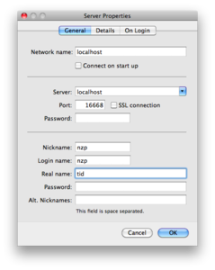
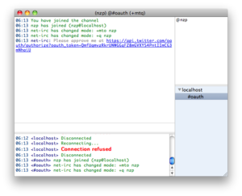
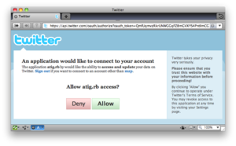
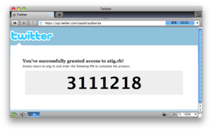

クイックスタート¶
必要なソフトウェア¶
以下のものが必要です。
- Ruby 1.8/1.9
- Sqlite3
- 適当なIRCクライアント(例: LimeChat )
またRubyには次のライブラリがインストールされている必要があります。
- oauth
- sqlite3-ruby
- json(Ruby 1.8の場合, Ruby 1.9の場合は不要)
- rspec(単体テストを実行する場合, 開発者以外は不要)
- rake(単体テストを実行する場合, 開発者以外は不要)
インストール¶
使ってみる¶
起動¶
コマンドラインから起動します。:
$ atig -d
githubからダウンロードした場合:
$ cd atig
$ bin/atig -d
I, [2010-04-05T07:22:07.861527 #62002] INFO -- : Host: localhost Port:16668
接続¶
IRCクライアントで、localhost:16668に接続します。

- nickname: Twitterのユーザ名
- login name: 使ってないので適当に
- real name: クライアントオプション 。tidがおすすめです。
- password: 空欄
- 詳しくは IRCコマンド を参照してください。
OAuth認証¶
初回接続時のみ、OAuthで認証させる必要があります。 接続時に#oauthにjoinされ、認証用のURLが表示されます。
表示されたURLにアクセスし、atig.rbに認証を与えます。
7桁の数字が表示されるので、それを#oauthに入力します。
発言してみる¶
- #twitterで発言すると、Twitterに投稿されます。
- CTCP ACTION を用いると、RTやreplyが行なえます。